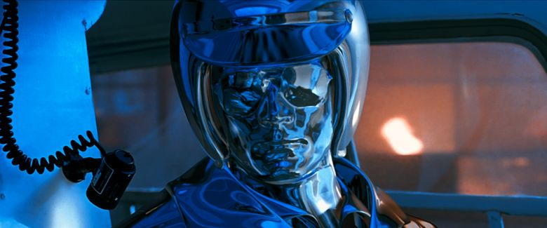

Producción
Desarrollo
Las conversaciones sobre una posible secuela de The Terminator surgieron poco después de su lanzamiento, pero varios problemas pendientes impidieron tal producción. Hubo limitaciones técnicas con respecto a las imágenes generadas por computadora, un aspecto de la película esencial para la creación del T-1000. La producción de la película The Abyss (1989), de James Cameron, proporcionó la prueba de concepto necesaria para resolver las preocupaciones técnicas. Por otro lado, también hubo disputas de propiedad intelectual entre Hemdale Film, que era propietaria de la franquicia y obstaculizó los esfuerzos para producir una secuela, y Carolco Pictures. Dado que Hemdale experimentaba problemas financieros, Arnold Schwarzenegger instó a Mario Kassar, director de Carolco, a ofertar por los derechos. Schwarzenegger declaró: «Le recordé a Mario que esto es algo que hemos estado buscando durante cuatro años, y que debería ser él quien debería hacer todo lo posible, sin importar lo que sea necesario para hacer este trato». Finalmente, Carolco pagó a Hemdale 5 millones USD por la franquicia, por lo que se resolvió el estancamiento legal.
Rodaje
El rodaje de Terminator 2 abarcó 171 días, entre el 9 de octubre de 1990 y el 28 de marzo de 1991, tiempo en que el equipo filmó en el desierto de Mojave, antes de visitar veinte sitios diferentes en California y Nuevo México. Estas ubicaciones van desde el centro comercial Santa Monica Place, donde los dos Terminator luchaban por conseguir llevarse a John, hasta los canales de control de inundaciones en el Valle de San Fernando, que acogió la persecución entre los Terminator y John; un río tuvo que ser redirigido para permitir la filmación en los canales, ya que de otra manera estarían húmedos. Cameron y su equipo también filmaron Terminator 2 en The Corral Bar y el Lake View Medical Center, ambos ubicados en Lake View Terrace. Las tomas externas de Cyberdyne Systems Corporation se filmaron en un edificio de oficinas en la esquina de Gateway Boulevard y Bayside Parkway, en Fremont. Con cerca de mil miembros, el equipo de producción supervisó numerosas acrobacias y secuencias de persecución; una de ellas tuvo lugar en la Ruta Estatal de California 103 (Terminal Island Freeway), entre Long Beach y Los Ángeles. Se colocaron 16 km de cables eléctricos para iluminar la persecución nocturna, que incluye un accidente de helicóptero a gran escala y un camión cisterna, por ejemplo.
Efectos visuales
Terminator 2 hizo un uso extensivo de imágenes generadas por computadora (CGI) para crear los dos Terminator principales. Dicha tecnología se requirió particularmente para el T-1000, que según se establece en el filme es una estructura de «polialeación mimética» (metal líquido), cuyo carácter cambiante le permite transformarse en casi cualquier cosa que toque. Industrial Light & Magic (ILM) proporcionó la mayoría de los efectos para gráficos por computadora, mientras que Pacific Data Images (PDI) se encargó de los efectos ópticos, y el artista Stan Winston de los efectos prácticos. La creación de los efectos visuales costó 5 millones USD y movilizó a treinta y cinco personas, incluidos animadores, científicos informáticos, técnicos y artistas; conllevó una duración de diez meses. Este proceso produjo un total de cinco minutos de tiempo de ejecución CGI. Se contrató al estudio de Stan Winston para producir títeres articulados y efectos protésicos, además de elaborar los efectos del esqueleto metálico del T-800. El supervisor de efectos visuales de ILM, Dennis Muren, comentó: «Todavía no hemos perdido el espíritu de asombro cuando vemos [los efectos visuales en el T-1000] que se acercan». Los logros técnicos en la creación del CGI para la película contribuyeron a que el equipo de efectos visuales recibiera un Óscar a los mejores efectos visuales en 1992.

Banda sonora
Brad Fiedel se encargó de crear la banda sonora para la película, al igual que en la anterior entrega de la saga. Recibió el guion del filme antes de ser contratado, aunque lo vio normal por parte de James Cameron al tratarse de una secuela. El director le enviaba pequeñas tomas para hacerse una idea de la música que tenía que crear. Para la creación de la partitura, Fiedel usó dos samplers de audio Fairlight CMI y superpuso varios instrumentos de orquesta. Por otro lado, a diferencia de la primera película, donde usó un compás 13/8, en Terminator 2 empleó un 6/8. Cameron le mencionó que necesitaba cambiar la textura y la calidad de la orquestación del tema respecto a The Terminator; Fiedel declaró: «Solo la profundidad y el sonido deben tener más calidez en comparación con el Terminator original, que es oscuro, azul y muy tenso [...] estás viendo la destrucción de la humanidad y eso provocó que agregara una nueva sección al tema donde hay un sonido de tipo coral». Ha sido considerada una actualización de la anterior, pues usa tecnológica más avanzada, pero los mismos motivos y efectos sintéticos. En referencia a su relación laboral con Cameron, Fiedel comentó: «Estuvimos sincronizados la mayor parte del tiempo, pero recuerdo que algunas veces tuvimos diferentes ideas para el enfoque. Uno fue la persecución del canal. Había hecho una señal de prueba y a Jim [James Cameron] no le gustó [...] me permitió la libertad de encontrar la solución musical. Jim siempre supo cuadro por cuadro de qué se trataba su película y casi siempre fue capaz de comunicarlo claramente. Esto hizo que la conversación fuera muy constructiva y me permitió darle lo que necesitaba».